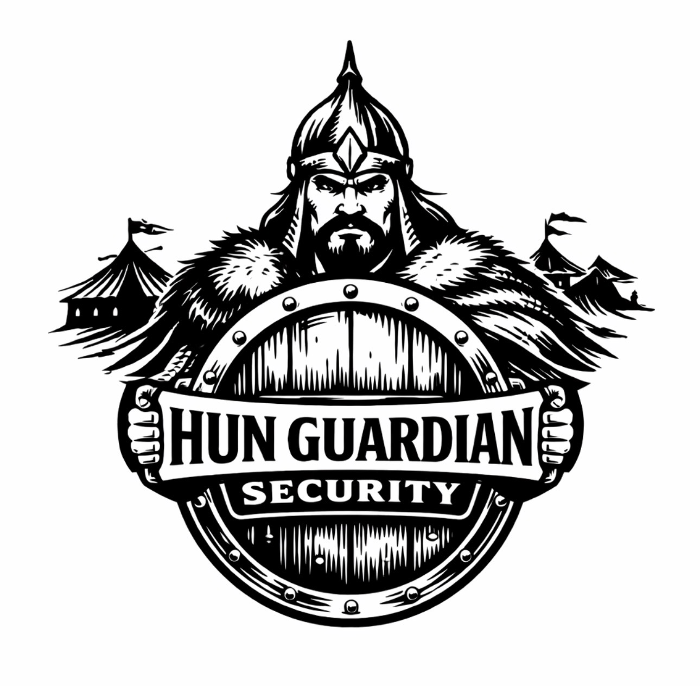

Sicherheit. Präsenz. Vertrauen.
Hun Guardian Security steht für zuverlässige Sicherheitsdienstleistungen, klare Kommunikation und professionelle Präsenz. Schutz für Objekte, Veranstaltungen und Privatkunden.
📍 Finstermühle 54, 91284 Neuhaus an der Pegnitz
📞 +49 1525 4045040
✉️ n.andras@yahoo.com